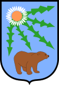
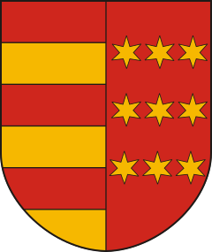
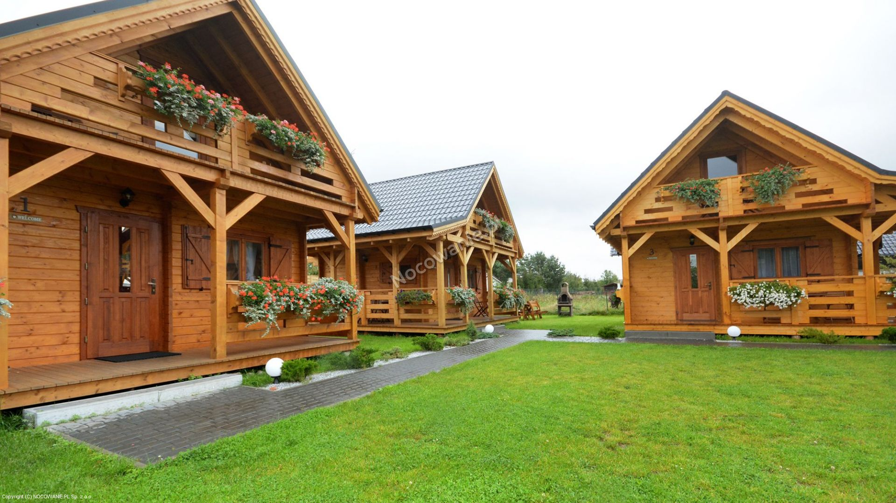
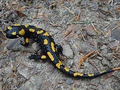
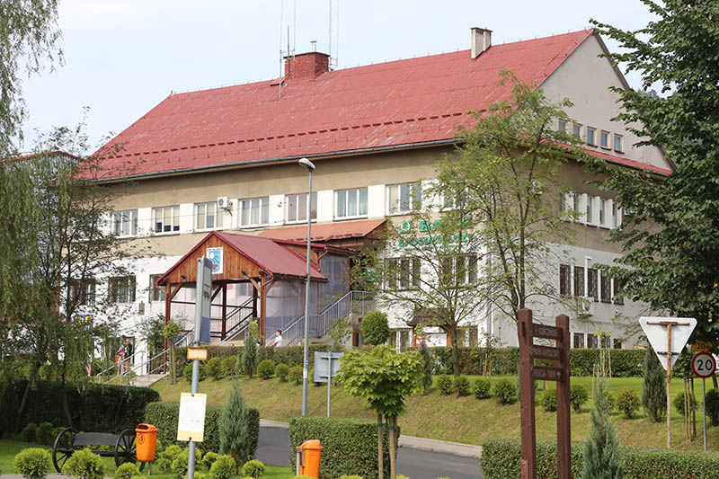

Gmina wiejska w Polsce położona w województwie małopolskim, w powiecie limanowskim.
W latach 1975–1998 gmina administracyjnie należała do województwa nowosądeckiego.
Jest to gmina letniskowa, o ogromnych walorach naturalnych.
Na terenie gminy spotkać można salamandrę plamistą.
Siedzibą gminy jest wieś Niedźwiedź.
Urząd gminy w Niedźwiedziu.